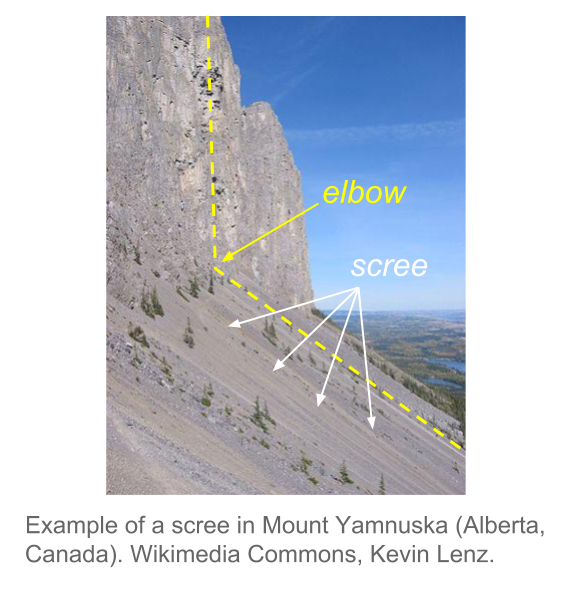

3 Analysis
Carrying out a comprehensive Principal Component Analysis is both an art and a science. The analyst must have some degree of analytical experience as well as a reasonable familiarity with the analyzed data. A rushed PCA analysis tends to lead to confusing results, and frustating endeavors. A well applied PCA involves a certain strategy to analyze the data, enforced with common sense, and taking certain precautions.
In this chapter, we present a methodology to carry out a Principal Component Analysis that goes above and beyond what is typically discussed in other texts about PCA. We try to stay away from the narrow perspective of using PCA within with the sole purpose of wroking with few variables that are compatible with a statistical model. Instead, we strongly advocate for analyses that take into account as many variables as possible. This will make the analysis richer, more holistic, and with more coherent interpretations.
3.1 Themescope
We are assuming that the data you are working with comes from a context of great data diversity. For example, data from surveys or questionnaires, or from a database of clients, in which there is an abundance of different types of variables.
In these cases with a rich variety of variables, we can group those variables in themes. Each theme defining a point of view or multivariate reality. For instance, when we have a group of socio-economic variables, or when a set of variables have to do with preferences about a set of products. By refer to this approach as themescope, that is, a multidimensional description by themes.
The analysis strategy that we propose is to analyze individuals by themes. This involves selecting a particular theme in which the variables associated to it become the active variables. Having a group of active variables, we study the resemblances of the individuals according to this point of view. And then we add all the available information that has not been utilized, but that can shed some light in better understanding the relationship between individuals and variables, by using the projection of supplementary elements.
Figure 3.1: Projection of categorical supplementary variables
Various Perspectives, Diverse Analyses
When selecting a particular active theme, this does not stop us from selecting another theme that can then become active in itself. By changing active themes, we have a different perspective of the analyzed data, in analogous way to taking photos of the same subject from different angles.
3.2 Conditions of Application
3.2.1 Linearity and Symmetry
We have seen the importance of the correlation coefficient (or covariance) in PCA. We can actually present PCA as a visualization technique of a correlation matrix (or coavraince matrix). The technique will excel when the correlation coefficient is a good measure of the association between variables. The ideal conditions to apply PCA are when the association among avriables are linear and their distributions are symmetric (i.e. closer to the normal distribution).
Consequently, we need to be cautious when the distributions are extremely asymmetric or when the associations among variables are not linear.
A common case that can limit the applicability of PCA is when analyzing variables that are seemingly continuous, but that in reality are a hybrid of continuous and nominal scale. For example, this is the case of variables like payed work time of women: this is null for a woman that is a housewife, while the distribution is continuous for women that have a payed job.
Nonlinearity associations can also limit the applicability of PCA. This is illustrated with the relation betwen age and income: overall, income tends to increase with age during active working years, but when a person retires the income tend to decrease.
Phenomena of lack of symmetry and lack of linearity will affect the results of a PCA. If these issues are not indentify, they can lead to wrong interpretations and conclusions. However, the presence of these phenomena will become apparent for the well trained eyes of an experienced analyst.
We should say that techniques such as Multiple Correspondence Analysis (MCA) can always be used after having encoded (categorized) the continuous variables. Compared to PCA, MCA has the advantage of being inherently non-linear, and thus can be used in situations when PCA is limited.
3.2.2 Balancing the content of active variables
More often than not, Principal Component Analysis is performed on variables having different units of measurement. In this case, the variances tend to be vary considerable in magnitude, and are not directly comparable. The typical solution to overcome this issue is to rescale the variables in standard units (i.e. mean of zero, unit variance). In this way, all variables wil be given the same importance, and we don’t have to worry about units of measurement anymore. In fact, this type of transformation has become the default solution in most PCA computer programs: to carry out a normalized PCA and work on the matrix of correlations. Keep in mind that this transformation modifies the shape of the cloud of points by providing the same spread among all directions in the space of origin.
Despite the usefulness of transforming variables into standardized scale, this transformation is not always the ideal solution to balance the variables. For example, if thre is a subset of variables that are highly correlated among each other, this subset will dominate the first principal component, and therefore, will have a higher importance in the analysis.
Suppose that you have 5 variables that are measuring the same aspect of a certain phenomenon, and that the other aspects are covered each one by just one variable. You can think of the group of 5 variables as being just one variable but with a variance 5 times larger than the rest of the variables. Consequently, the first axis will be determined by the cumulative effect of the 5 highly correlated variables. In summary, we should pay attention to the effect produced by groups of variables that are highly correlated, and have a mechanism to balance the importance of each aspect in the studied phenomeno.
3.3 Validation: stability and significance
What is the part in PCA results that is not really accounted by the structure of the data, but by the randomness in the data? Are the results stables and reproducibles? Do the configuration of points change based on the studied data? All of these questions make it necessary to assess the stability of the obtained results.
The stability of the results will depend on the randomness of the data collection process (e.g. random samples, sampling surveys), as well as on the measurement errors in the variables.
3.3.1 How many axes to study and retain?
Are the directions of the first axes will defined and stable? More precisely, are the dispersions in consecutive directions really different? If not, we would have to consider that the factorial plane formed by them is stable but the associated axes are not really different (i.e. indeterminate by a rotation).
One way to answer these questions is to suppose that the data come from a sample drawn from a population with a normal distribution. In this case, the eigenvalues asymptotically follow a normal distribution (Anderson, 1963). The, we can estimate a 95% confidence interval for each eigenvalue with the formula (3.1)
\[\begin{equation} \left [ \lambda_{\alpha} \left (1 - 1.96 \sqrt{2/(n-1)} \right ); \hspace{1mm} \lambda_{\alpha} \left (1+1.96\sqrt{2/(n-1)} \right) \right ] \tag{3.1} \end{equation}\]The width of this interval gives us an idea of the stability of the eigenvalue with respect to the sample randomness. The overlapping in the intervals of two consecutive eigenvalues suggests that these eigenvalues are equal (or very similar). The corresponding axes are thus indeterminate by one rotation. Under this situation, the analyst should focus on the interpretation of the subspace defined by the first eigenvalues that are well separated.
Although this result has to do with eigenvalues of covarance matrices, it can also be applied to the eigenvalues of correlation matrices. Simulation studies show that the confidence intervals tend to be “cautious”: the coverage percentage of the true eigenvalue, is almost always greater than the anounced confidence level. In any case, the asymptotic nature of the results, and the underlying hypothesis of normality, lead us to consider the results are merely indicative (not a hard rule).
In regards of the factorial axes, it is convenient to distinguish the axes that will be studied, from the axes that will be used. The factorial axes can be seen as an ultimate result, or also as an intermediate stage for further studies.
For example, a PCA can be a preliminary stage before performing a discriminant analysis. In this case, we will try to use the axes with discriminant power, which may not coincide with the axes of largest spread.
If the goal is to classify individuals, it makes sense to retain only the axes expressing real directions of spread, in order to preserve the stable characteristics of the individuals, while excluding those directions that are mainly capturing random noise.
Scree Test (Cattell’s rule, 1966)
One of the most prevalent questions in PCA is “how many principal components (or factorial axes) to retain?” Unfortunately, there is no simple answer to this question.
If we assume that the \(n\) values taken by the \(p\) variables come from a random process that uniformly fills up the space, without privileging any direction, then the \(p\) eigenvalues of the PCA will slowly decrease in a regular form.
If a PCA provides a histogram of the eigenvalues showing one or more staircase steps, we can think that there are sufficiently strong associations between the variables. These associations would be responsible for the appearance of directions or subspaces where most of the dispersion is concentrated.
Such pragmatic considerations, can be used to determine—in a more or less subjective way—a minimum and a maximum number of axes to retain in the analysis. The main way to do this is through visual inspection of the histogram of eigenvalues following the so-called scree test or elbow criteria proposed by Raymond Cattell (1966). This criteria, which is the simplest and oldest one, involves graphing a line plot of the eigenvalues, ordered from largest to smallest, and then look for the “elbow” of the graph where the eigenvalues seem to level off.
In the example of the cities (first PCA), we obtained the following eigenvalues:
| num | eigenvalues | percentage | cumulative |
|---|---|---|---|
| 1 | 10.1390 | 84.49 | 84.49 |
| 2 | 0.8612 | 7.18 | 91.67 |
| 3 | 0.3248 | 2.71 | 94.37 |
| 4 | 0.1715 | 1.43 | 95.80 |
| 5 | 0.1484 | 1.24 | 97.04 |
| 6 | 0.0973 | 0.81 | 97.85 |
| 7 | 0.0682 | 0.57 | 98.42 |
| 8 | 0.0525 | 0.44 | 98.86 |
| 9 | 0.0505 | 0.42 | 99.28 |
| 10 | 0.0332 | 0.28 | 99.55 |
| 11 | 0.0309 | 0.26 | 99.81 |
| 12 | 0.0226 | 0.19 | 100.00 |
We can then plot a histogram of the eigenvales, and add a line connecting the heights of the bars to better see the way in which the sizes of the eigenvalues decrease:

In the second PCA of the salaries divided by the mean salary of a city, we obtained the following eigenvalues:
| num | eigenvalues | percentage | cumulative |
|---|---|---|---|
| 1 | 4.4910 | 37.43 | 37.43 |
| 2 | 1.7148 | 14.29 | 51.72 |
| 3 | 1.2989 | 10.82 | 62.54 |
| 4 | 1.0396 | 8.66 | 71.20 |
| 5 | 0.8699 | 7.25 | 78.45 |
| 6 | 0.7831 | 6.53 | 84.98 |
| 7 | 0.5309 | 4.42 | 89.40 |
| 8 | 0.3874 | 3.23 | 92.63 |
| 9 | 0.3210 | 2.67 | 95.31 |
| 10 | 0.2561 | 2.13 | 97.44 |
| 11 | 0.2021 | 1.68 | 99.12 |
| 12 | 0.1052 | 0.88 | 100.00 |
Graphing the scree plot we obtain the following display:

More formally, Cattell’s criteria consist of sorting the lagged differences of second order between eigenvalues, as follows:
\[\begin{equation} d(\alpha) = (\lambda_{\alpha + 1} - \lambda_{\alpha}) - (\lambda_{\alpha} - \lambda_{\alpha - 1}) \tag{3.2} \end{equation}\]The reason why is called scree test has to do with the metaphor of a mountain scree. According to wikipedia, a “scree is a collection of broken rock fragments at the base of crags, mountain cliffs, volcanoes or valley shoulders that has accumulated through periodic rockfall from adjacent cliff faces.”

Note
We have seen that when there is a size effect in the first axis, the subsequent eigenvalues are affected and reduced. However, it is possible that subsequent eigenvalues reflect structural oppositions. This is the case of of the second PCA on raw data, which corresponds approximately, to the first axis of the analysis on the ratio data, when the size effect is eliminated.
On the other hands, it is risky to interpret the percentage of inertia as a measure of the information contained in an axis. This percentage can be made as small as possible, just by adding independent random variables to the data of active variables. The overall inertia will increase, while the “information” contained in the first axes will remain the same and, consequently, the percentage of inertia in each axis will decrease.
| num | eigenvalue | percentage | cumulative |
|---|---|---|---|
| 1 | 1.7994 | 15.00 | 15.00 |
| 2 | 1.5473 | 12.89 | 27.89 |
| 3 | 1.4034 | 11.69 | 39.58 |
| 4 | 1.2329 | 10.27 | 49.86 |
| 5 | 1.1123 | 9.27 | 59.13 |
| 6 | 1.0635 | 8.86 | 67.99 |
| 7 | 0.8877 | 7.40 | 75.39 |
| 8 | 0.7653 | 6.38 | 81.76 |
| 9 | 0.7059 | 5.88 | 87.65 |
| 10 | 0.6000 | 5.00 | 92.65 |
| 11 | 0.5414 | 4.51 | 97.16 |
| 12 | 0.3410 | 2.84 | 100.00 |

3.3.2 Simulations, random effects on individuals
One way to assess the stability of results involves using the available information in the data, via computational methods to run some simulations. By following this type of approaches, we are able to free ourselves from the probabilistic assupmtions about the data, which are seldom met when dealing with multivariate data.
The strategy that we use is based on random perturbations of the data, in order to simulate a certain natural variability or measurement error in the observations.
Each observation in the data matrix is replaced by the observed value ples a random quantity that follows a normal distribution with mean and variance depending on the variable under modification.
We denote this change of value as:
\[\begin{equation} x_{ij} = x_{ij} + N(x_{ij}, Ks_j) \tag{3.3} \end{equation}\]The observed value \(x_{ij}\) is modified by adding a random quantity that follows a normal distribution, centered at \(x_{ij}\), and with standard deviation \(K\) times the standard deviation \(s_j\) of variable \(j\).
The value of the constant \(K\) determines the amount of perturbation that we introduce in the data. \(K=0\) indicates that the observations remain unchanged. A value of \(K=1\) means that each observation is affected, on average, one standard deviation.
Once we have modified the data table, we can perform a PCA, calculate its directions, the correlation of the extracted directions with the original-unmodified variables, obtaining a matrix of correlations between axis systems.
In this matrix we will inspect, for each original axis, what other modified axes are most correlated with. We will also check if an axis is correlated with all other axes in analogous way. In the former case, this indicates that an axis is stable, despite the random modifications in the data. In the latter case, this indicates that an axis is the result of randomness in the data.
By looking at the matrix of correlations described in the previous paragraph, we can detect up to what extent the rank of the axes are stables, and from what point the “natural” random fluctuations in data begin.
In the example of the international cities, we show in table (TABLE 3.4) the correlation matrices between the axes (in rows) obtained in the analysis of ratios (salaries of professions with respect to the mean salary of the city) and the axes obtained with a random perturbation of 1%, 5% and 10% of the standard deviation of each variable.
| Variables (perturbation 1%) | F1 | F2 | F3 | F4 | F5 |
|---|---|---|---|---|---|
| Factorial axis 1 (2nd PCA) | 1.00 | 0.01 | 0.00 | 0.00 | 0.00 |
| Factorial axis 2 (2nd PCA) | -0.01 | 0.99 | -0.05 | 0.12 | -0.06 |
| Factorial axis 3 (2nd PCA) | 0.00 | 0.04 | 0.99 | 0.04 | -0.04 |
| Factorial axis 4 (2nd PCA) | 0.00 | -0.08 | -0.02 | 0.91 | 0.37 |
| Factorial axis 5 (2nd PCA) | 0.00 | -0.10 | -0.06 | 0.35 | -0.89 |
Perturbation of 5%
| Variables (perturbation 5%) | F1 | F2 | F3 | F4 | F5 |
|---|---|---|---|---|---|
| Factorial axis 1 (2nd PCA) | 0.99 | 0.08 | -0.03 | 0.01 | -0.03 |
| Factorial axis 2 (2nd PCA) | -0.08 | 0.87 | -0.06 | 0.20 | -0.20 |
| Factorial axis 3 (2nd PCA) | 0.01 | 0.13 | 0.85 | 0.24 | 0.34 |
| Factorial axis 4 (2nd PCA) | 0.01 | 0.06 | 0.36 | -0.57 | -0.52 |
| Factorial axis 5 (2nd PCA) | 0.03 | 0.07 | 0.07 | -0.48 | 0.47 |
Perturbation of 10%
| Variables (perturbation 10%) | F1 | F2 | F3 | F4 | F5 |
|---|---|---|---|---|---|
| Factorial axis 1 (2nd PCA) | -0.64 | 0.72 | -0.11 | -0.05 | 0.01 |
| Factorial axis 2 (2nd PCA) | -0.39 | -0.31 | -0.37 | 0.09 | -0.32 |
| Factorial axis 3 (2nd PCA) | -0.07 | 0.01 | 0.24 | 0.32 | 0.68 |
| Factorial axis 4 (2nd PCA) | 0.11 | -0.01 | -0.54 | -0.14 | 0.24 |
| Factorial axis 5 (2nd PCA) | 0.14 | 0.30 | 0.15 | 0.04 | -0.29 |
By looking at the diagonal of the tables, we observe stability in the first factor, as well as in the second and the third factors, up to a random perturbation of 5% of the original standard deviation. With a high perturbation (of 10%) only the first factor is resistant to the modifications.
Table 3.5 displays the mean and standard deviation of the salary variables (gross salary divided by the city-mean salary), as well as the correlation between the randomly modified variable and the original variable. We can tell that with a random perturbation of 10% the standard deviations increase, while the correlations decrease.
| Variable | Summary Statistics | Original | P1% | P5% | P10% |
|---|---|---|---|---|---|
| teacher | mean | 1.19 | 1.18 | 1.18 | 1.17 |
| teacher | std deviation | 0.37 | 0.38 | 0.44 | 0.54 |
| teacher | correlation | - | 0.99 | 0.94 | 0.71 |
| bus_driver | mean | 1.04 | 1.04 | 1.03 | 1.05 |
| bus_driver | std deviation | 0.25 | 0.26 | 0.27 | 0.35 |
| bus_driver | correlation | - | 1.00 | 0.96 | 0.60 |
| mechanic | mean | 0.96 | 0.96 | 0.96 | 1.00 |
| mechanic | std deviation | 0.24 | 0.24 | 0.27 | 0.52 |
| mechanic | correlation | - | 0.99 | 0.89 | 0.46 |
| construction_worker | mean | 0.72 | 0.73 | 0.73 | 0.72 |
| construction_worker | std deviation | 0.27 | 0.26 | 0.26 | 0.30 |
| construction_worker | correlation | - | 0.99 | 0.94 | 0.71 |
| metal_worker | mean | 1.17 | 1.16 | 1.16 | 1.16 |
| metal_worker | std deviation | 0.22 | 0.23 | 0.26 | 0.30 |
| metal_worker | correlation | - | 0.99 | 0.86 | 0.79 |
| cook_chef | mean | 1.40 | 1.40 | 1.40 | 1.38 |
| cook_chef | std deviation | 0.61 | 0.63 | 0.61 | 0.58 |
| cook_chef | correlation | - | 1.00 | 0.99 | 0.95 |
| departmental_head | mean | 2.63 | 2.62 | 2.61 | 2.53 |
| departmental_head | std deviation | 1.31 | 1.31 | 1.34 | 1.44 |
| departmental_head | correlation | - | 1.00 | 0.98 | 0.95 |
| engineer | mean | 2.12 | 2.12 | 2.07 | 2.04 |
| engineer | std deviation | 0.75 | 0.76 | 0.77 | 0.84 |
| engineer | correlation | - | 1.00 | 0.96 | 0.90 |
| bank_clerk | mean | 1.51 | 1.52 | 1.48 | 1.48 |
| bank_clerk | std deviation | 0.61 | 0.61 | 0.63 | 0.71 |
| bank_clerk | correlation | - | 1.00 | 0.98 | 0.90 |
| executive_secretary | mean | 1.13 | 1.13 | 1.13 | 1.14 |
| executive_secretary | std deviation | 0.28 | 0.27 | 0.27 | 0.35 |
| executive_secretary | correlation | - | 0.99 | 0.98 | 0.96 |
| salesperson | mean | 0.76 | 0.76 | 0.75 | 0.78 |
| salesperson | std deviation | 0.16 | 0.16 | 0.16 | 0.18 |
| salesperson | correlation | - | 0.99 | 0.97 | 0.52 |
| textile_worker | mean | 0.68 | 0.68 | 0.70 | 0.66 |
| textile_worker | std deviation | 0.17 | 0.18 | 0.20 | 0.27 |
| textile_worker | correlation | - | 0.99 | 0.87 | 0.72 |
3.3.3 Bootstrap Simulations
Another way of empirical assessment can be done using random resampling methods on the data. The idea is to obtain a number of data tables, all of the same dimension as the original one, by randomly sampling with replacement the observations in the data. This approach is the so-called Bootstrap method (Efron et al, 1993). Following this approach, it is possible to estimate the sampling errors and the distribution of the various PCA results.
How to implement the bootstrap method? First, we form a large number of samples of \(n\) individuals which are drawn with replacement from the \(n\) original individuals in the data. This set of samples is referred to as the bootstrap samples. For each bootstrap sample, some of the original individuals won’t be part of the sample, while some individuals may appear more than once in the sample. Each bootstrap sample gives place to a data table.
On each of the bootstrap tables we calculate its eigenvalues and eigenvectors. We then obtain a bootstrap distribution of the eigenvalues, as well as the bootstrap distribution of the correlations between the eigenvectors and the original axes.
For each eigenvalue we can obtain a confidence interval. Likewise, for each eigenvector we can obtain a confidence cone around the original eigenvector. Examining the correlation between the axes can then reveal potential rotations among axes.
The bootstrap simulations can also be used to assess the stability of the projections of the variables and the categories. We can position the different bootstrap tables as supplementary information in the analysis of the original table (Lebart et al, 1995). In this way, it is possible to visualize in the factorial planes regions of “natural” fluctuation of the different elements in the data table.
3.4 Analysis of Table of Ranks
In PCA, it is assumed that the variables are measured on a continuous scale. When applying a normalized PCA, the results will depend on the matrix of correlations between variables. Such results can be affected by the presence of outliers or atypical observations.
One approach to make the results independent from the scale of measurement and monotone transformations, consists of working with the ranks of the variables and not with the actual observed values.
To do that, we substitute each value by its rank in increasing order, depending on the considered variable. By doing this, the active table becomes a table of ranks, and consequently, the PCA is performed on a correlation matrix of ranks. This is a remarkable feature of PCA: it is a general methodology that can be applied on any correlation matrix defined by the analyst.
One interesting transformation involves working with the Spearman’s correlation coefficients. This coefficient measures the monotone dependency between the rank values of two variables according to the following formula:
\[\begin{equation} r_s (j, j') = 1 - \frac{6 \sum_{i}^{n} (x_{ij} - x_{ij'})^2}{n (n^2 - 1)} \tag{3.4} \end{equation}\]where the quantities \(x_{ij}\) represent the rank of the individual \(i\) of the \(j\) variable. The advantage of the Spearman’s correlation coefficient is that it coincides with the Pearson’s coeffcient (usual correlation) when applied to a matrix of ranks.
In the case of the international cities, the Spearman’s correlations are given in table 3.6 (compare these with table 2.6).
| tea2 | bus2 | mec2 | con2 | met2 | coo2 | dep2 | eng2 | ban2 | exe2 | sal2 | tex2 | |
|---|---|---|---|---|---|---|---|---|---|---|---|---|
| tea2 | 1.00 | |||||||||||
| bus2 | 0.22 | 1.00 | ||||||||||
| mec2 | -0.24 | 0.03 | 1.00 | |||||||||
| con2 | 0.27 | 0.28 | 0.31 | 1.00 | ||||||||
| met2 | 0.16 | 0.03 | 0.19 | 0.11 | 1.00 | |||||||
| coo2 | -0.24 | -0.21 | -0.20 | -0.43 | -0.33 | 1.00 | ||||||
| dep2 | -0.10 | -0.14 | -0.42 | -0.61 | 0.03 | 0.24 | 1.00 | |||||
| eng2 | -0.15 | -0.33 | -0.38 | -0.68 | 0.02 | 0.28 | 0.49 | 1.00 | ||||
| ban2 | 0.03 | 0.01 | -0.46 | -0.37 | -0.37 | 0.24 | 0.46 | 0.26 | 1.00 | |||
| exe2 | -0.22 | -0.28 | -0.59 | -0.60 | -0.36 | 0.19 | 0.41 | 0.49 | 0.37 | 1.00 | ||
| sal2 | 0.02 | -0.07 | -0.07 | -0.13 | -0.17 | -0.04 | 0.01 | 0.09 | -0.05 | 0.13 | 1.00 | |
| tex2 | 0.16 | 0.27 | -0.04 | 0.41 | 0.02 | -0.42 | -0.32 | -0.25 | -0.30 | -0.04 | 0.06 | 1 |
We apply a PCA on the matrix of Spearman’s correlations. The eigenvalues are depicted in table 3.7 which can be compared to those of table 2.7.
| num | eigenvalue | percentage | cumulative |
|---|---|---|---|
| 1 | 3.8758 | 32.30 | 32.30 |
| 2 | 1.6301 | 13.58 | 45.88 |
| 3 | 1.3199 | 11.00 | 56.88 |
| 4 | 1.2365 | 10.30 | 67.19 |
| 5 | 0.9125 | 7.60 | 74.79 |
| 6 | 0.8049 | 6.71 | 81.50 |
| 7 | 0.6575 | 5.48 | 86.98 |
| 8 | 0.4481 | 3.73 | 90.71 |
| 9 | 0.3752 | 3.13 | 93.84 |
| 10 | 0.3372 | 2.81 | 96.65 |
| 11 | 0.2662 | 2.22 | 98.87 |
| 12 | 0.1360 | 1.13 | 100.00 |
Likewise, table 3.8 displays the results obtained for the ranks of the active variables.
| coord1 | coord2 | coord3 | cor1 | cor2 | cor3 | |
|---|---|---|---|---|---|---|
| teacher2 | -0.27 | 0.59 | 0.37 | -0.27 | 0.59 | 0.37 |
| bus_driver2 | -0.39 | 0.45 | 0.00 | -0.39 | 0.45 | 0.00 |
| mechanic2 | -0.58 | -0.65 | -0.11 | -0.58 | -0.65 | -0.11 |
| construction_worker2 | -0.85 | 0.16 | -0.14 | -0.85 | 0.16 | -0.14 |
| metalworker2 | -0.32 | -0.22 | 0.84 | -0.32 | -0.22 | 0.84 |
| cook_chef2 | 0.55 | -0.30 | -0.30 | 0.55 | -0.30 | -0.30 |
| factory_manager2 | 0.71 | 0.07 | 0.38 | 0.71 | 0.07 | 0.38 |
| engineer2 | 0.73 | -0.08 | 0.31 | 0.73 | -0.08 | 0.31 |
| bank_clerk2 | 0.60 | 0.35 | -0.09 | 0.60 | 0.35 | -0.09 |
| executive_secretary2 | 0.75 | 0.27 | -0.16 | 0.75 | 0.27 | -0.16 |
| salesperson2 | 0.11 | 0.15 | -0.26 | 0.11 | 0.15 | -0.26 |
| textile_worker2 | -0.46 | 0.51 | -0.11 | -0.46 | 0.51 | -0.11 |
The cloud of points is depicted in figure 3.2. The configuration of this cloud is similar to the initial cloud displayed in figure 2.9. The similarity of the results obtained with the table of ratios confirms the good quality of the performed analysis. Also, this similarity shows that the essential information is contained in the rank of the values, and not so much in the observed eigenvalues.
Figure 3.2: Circle of correlations on the first factorial plane of the second analysis
The fact that the cloud of points in figure 3.2 is similar to the graph 2.9, indicates that the visual displays do not depend on: the units of measurement, monotone transformations, or possible existance of outliers. Hence, we can say that the observed configurations are robusts.
In the absence of robust configurations, we can suggest positioning the elements of the original table as supplementary elements in the analysis of ranks, in order to detect whether there are sensible elements.
Sometimes it is convenient to work with variables that have distributions close to a normal distribution. In this case, each variables con be handled as having a normal distribution with expected value equal to the observation of rank \(k\), instead of working directly with the ranks (Lebart et al, 1977).
3.5 Optimal Reconstitution of Data
Principal Component Analysis allows us to approximate a data matrix, generally of column-rank \(p\), a matrix of lower rank defined by the first eigenvalues and their corresponding eigenvectors.
The formula (3.5), referred to as the singular value decompoisition (SVD), lets us approximate the original values \(x_{ij}\) with a factorization of some set of eigenvectors and eigenvalues. In other words, we can obtain an approximate reconstitution of the data values by using only a few \(q\) values and vectors from the SVD.
\[\begin{equation} \hat{x}^{q}_{ij} = \sum_{\alpha = 1}^{q} \sqrt{\lambda_{\alpha}} \hspace{1mm} v_{i\alpha} u_{j\alpha} \tag{3.5} \end{equation}\]The term \(\hat{x}^{q}_{ij}\) is an approximation of the observed value \(x_{ij}\) from a small set of coefficients calculated from a PCA: the eigenvalues \(\lambda_{\alpha}\), the eigenvectors \(v_{i\alpha}\) and \(u_{j\alpha}\), of rank 1 to \(q\).
This reconstitution is optimal in the sense that it provides the best least-squares approximation of the original matrix: minimizing the sum of squares of the deviations between the observed values and the approximated values (for all \(q\)):
\[ min \left \{ \sum_{i} \sum_{j} (x_{ij} - \hat{x}_{ij}^{q})^2 \right \} \]
It can be proved that:
\[\begin{equation} \sum_{i} \sum_{j} (x_{ij} - \hat{x}^{q}_{ij})^2 = \sum_{\alpha = q+1}^{p} \lambda_{\alpha} \tag{3.6} \end{equation}\]The sum of the \(p-q\) excluded eigenvalues measures the amount of error when approximating the original cloud of points by its projection onto a subspace of dimension \(q\).
This property is of great practical application. It justifies the utilization of PCA in a data compression problem (for example, in the reconstitution of images, and also in data transmission).
3.6 Synthetic Variables and Indices
So far we have discussed Principal Component Analysis from a purely geometric perspective: how to obtain a subspace that best approximates the original distances of the data elements.
Interestingly, PCA can also be seen from other points of views. One of them involves the idea of looking for a small set of new variables—formed by the original ones—in such a way that the loss of “information” is minimized.
Figure 3.3: Dimension reduction or minimization of “information loss”
The new variables (i.e. vectors) are searched for in a way that they are as close as possible (as much correlated) to the set of original variables.
The solution is obtained with the vector \(\Psi\) of \(n\) elements that maximizes the function (3.7)
\[\begin{equation} max \sum_{j} cor^{2} (\boldsymbol{\Psi}, \mathbf{x_j}) \tag{3.7} \end{equation}\]In other words, we look for a new variable that is the “closest” to the set of original variables. This will provide a first common factor; the rest of the factors are obtained with the same condition but orthogonal to the directions previously obtained.
Often, the first factor is highly correlated with all the variables. This indicates the so-called size factor, which we have discussed in detail in section 2.3.
The size factor can be considered as an overall summary, or synthesis, of the entire set of variables. We can compare the first factor with the average of all the original variables, and confirm that they are very similar.
\[\begin{equation} \frac{1}{p} (\mathbf{x_1} + \mathbf{x_2} + \dots + \mathbf{x_p}) \approx \boldsymbol{\Psi_1} \tag{3.8} \end{equation}\]| Variable | Coord1 | Coeff1 |
|---|---|---|
| teacher | 0.94 | 0.30 |
| bus_driver | 0.96 | 0.30 |
| mechanic | 0.92 | 0.29 |
| construction_worker | 0.90 | 0.28 |
| metalworker | 0.95 | 0.30 |
| cook_chef | 0.87 | 0.27 |
| factory_manager | 0.84 | 0.26 |
| engineer | 0.90 | 0.28 |
| bank_clerk | 0.88 | 0.28 |
| executive_secretary | 0.97 | 0.31 |
| salesperson | 0.96 | 0.30 |
| textile_worker | 0.94 | 0.29 |
Figure 3.4: Size Factor of active variables
The data set about the international cities provide an example of how to find an index of mean salary per city. The components of the unit axis give the linear combination of the original variables (mean-centered and reduced). This is the linear combination of the first principal component, namely, the desired index of mean salaries (see table 2.3).
A common application of PCA is to build synthetic indices. For instance, a quality index of a given product made from several characteristics of the product. A common example in psychometrics has to do with indices that define a general aptitude factor: e.g. verbal aptitude, or math aptitude. Also in economics, we often find indices of economic capacity for a certain region or city.
Sometimes there is no clear definition of the desired index, but rather a vague notion od the aspects that such an index may comprise. In these cases, the analysts must pay careful attention to collect reliable data, with indicators of the desired index, ideally with highly correlated variables. The computed index (or a first approximation) will be determined by the first principal component of the gathered data.
3.7 Handling Missing Values
With real data, it is common to have individuals for which one or more variable measurements are missing. For example, in a survey about quality of housing, an interviewee may not feel like answering a question about the number of bathrooms in his/her house. Or the same interviewee may not recall the value of the area of the house. In order to have an idea of the amount of missing values, it is recommended to count the number of missing values per individual. In any case, given a data matrix with missing values, we should have a policy about to handle them.
A first approach to take care of missing values consists of removing the individuals with missing data before performing a PCA. Obviously, this solution implies losing several individuals, which could be detrimental for the overall quality of the calculated results.
Another approach involves replacing the missing values with an estimation. This approach is typically known as imputing missing values.
Keep in mind that PCA relies on the analysis of the dispersion in the individuals around the center of gravity. When we don’t have information about an individul, a prudent decision is to locate that individual in the center of the cloud. By doing this, we don’t privilege any direction of dispersion.
This gives us a first basic rule to handle missing data. We substitute an individual’s missing value by the mean of the variable for which there’s no available information. This works as lon as the amount of missing data for that given variable is small.
Of course, more refined imputation procedures can be devised. This usually depends on the degree of knowledge about the phenomenon under study. For example, if we have an old adult male farmer for which his income is missing, we could estimate this value with the average of the incomes in this category.
Notice that we could also use the results of the PCA to fine tune (in a non-parametric optimization way) the estimation of a missing values. The rationale behind this approach is based on the reconstitution formula (3.5) to approximate the data. Under this procedure, we can estimate the value of the \(ij\)-th cell with the \(q\) first factors.